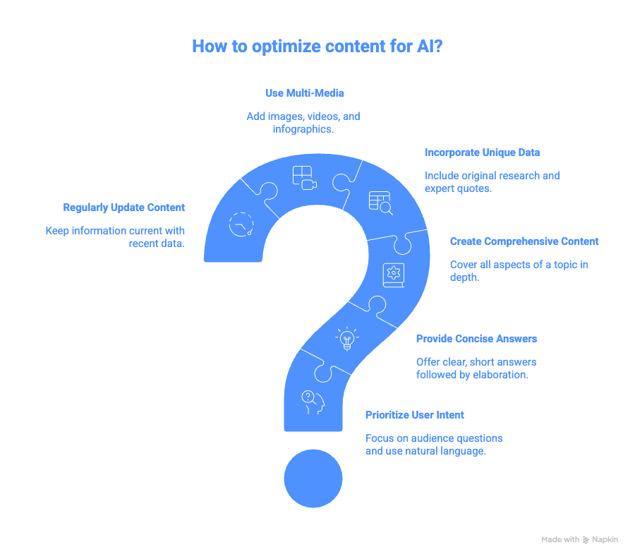

What started as an exercise to rebuild my website has led my down the path of AEO (AI Engine Optimization). I've been following the discussion on SEO transitioning to AEO but for the most part it has been theoretical. From personal experience I can see how much less I use Google to find information (hence the death of SEO) and how much I use LLMs to find my information (hence the rise of AEO).
As I dug deeper into AEO strategies, what kept standing out was this piece of advice -
Create high-quality, structured, and credible content that AI models can easily understand, extract, and cite in their generated answers

Once I published my new website and ported over all my LinkedIn articles (comprehensive content, unique data, regularly updated, use natural language etc.), I was curious what ChatGPT would say about Vyceral Solutions.
I quickly realized that there are 2 variations of AEO -
"Be ready when AI researches you" and "Get discovered via AI."
Be ready when AI researches you - is : what does the LLM have to say about you when someone is specifically asking about you. When people ask ChatGPT about Vyceral Solutions, what comes back?
Get discovered via AI - is : do you come up when someone searches for "boutique GTM consulting firm leveraging GenAI"?
What I quickly realized was that I had solved for "Be ready when AI researches you" but "Get discovered via AI" is a much longer term strategy and does not have a shortcut. You have to build your brand, get referred, talked about and get out there, till the internet catches up about who you are and then you will be discovered.
So what did AI have to say about Vyceral Solutions -
Vyceral Solutions is a credible, modern, niche GenAI consultancy with a strong worldview, well-developed thought leadership, and a practical builder-focused approach. Their biggest strengths lie in clarity of vision and depth of insight; their biggest gaps are commercial proof points and maturity of packaged offerings.
This is quite accurate and it did a great job crawling my website and coming up with this summary. But my wife raised a sharp question: what if I had lied? AI would have repeated it without hesitation. It doesn't verify, it summarizes. Which cuts both ways: bad actors can fabricate credibility, and good actors who haven't optimized their presence may not show up at all.
AI doesn't reward truth. It rewards structure and visibility.
My final learning is a call to action for you: Audit your digital footprint through an AI lens. Ask ChatGPT what it knows about you or your business. If the answer isn't aligned with your brand, you need to take action. Redesign your site and remember this truth: building a credible AI presence requires consistent effort. There is no shortcut for creating and sharing original content in your own voice.